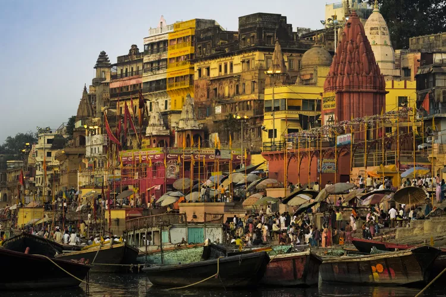

*TOP DESTINATIONS*

Chittorgarh (literally Chittor Fort), also known as Chittod Fort, is one of the largest forts in India. It is a UNESCO World Heritage Site. The fort was the capital of Mewar and is located in the present-day city of Chittorgarh. It sprawls over a hill 180 m (590.6 ft) in height spread over an area of 280 ha (691.9 acres)

The Hawa Mahal is a palace in the city of Jaipur, Rajasthan, India. Built from red and pink sandstone, it is on the edge of the City Palace, Jaipur, and extends to the Zenana, or women's chambers. Hawa Mahal is known as the “palace of winds“. Maharaja Sawai Pratap Singh built it palace in 1799

Vittala Temple, which is known for its exceptional architecture and unmatched craftsmanship. It is considered to be one of the largest and the most famous structure in Hampi.

🌸VARANSI🌸
Varanasi, also known as Benares, Banaras, or Kashi, is a city on the Ganges river in northern India123. It is one of the seven sacred cities of Hinduism and is India's most important pilgrimage destination3. The city has a central place in the traditions of pilgrimage, death, and mourning in the Hindu world1. By the 2nd millennium BCE, it had become a religious, commercial, and industrial center.

Alibag, also known as Alibaug , is a coastal city and a municipal council in Raigad district of Maharashtra, India. It is the headquarters of the Raigad district and is south of the city of Mumbai. Alibag was founded in the 17th century by the Admiral of the Maratha Navy Kanhoji Angre.

Ganpatipule (Marathi : गणपतीपुळे) is a coastal town in Ratnagiri district of Maharashtra. Due to its Ganpati mandir the town is popular Hindu pilgrimage and tourists destination.
The town is situated near Ratnagiri city which is seat of its namesake district, Chiplun town is located its north side.

The Agra Fort, also known as Agra's Red Fort, is a historical fort in the city of Agra, India. It was established by the Mughal emperor Akbar in the 16th century and served as both a military base and a royal residence. The fort is located on the right bank of the Yamuna River and is a UNESCO World Heritage site.

The Ajanta Caves are generally agreed to have been made in two distinct phases; first during the 2nd century BCE to 1st century CE, and second several centuries.
[22][23][24] The caves consist of 36 identifiable foundations,[8] some of them discovered after the original numbering of the caves from 1 through 29.
[22][23][24] The caves consist of 36 identifiable foundations,[8] some of them discovered after the original numbering of the caves from 1 through 29.

PALACE🌸
Amber Palace, also known as Amer Fort, is a majestic fort located on a hill in Amer, near Jaipur in the Indian state of Rajasthan1234. It was the capital of the Kuchwaha Rajputs from the 11th to the 18th century2. The palace was built using red sandstone and marble and is a great example of Rajput architecture154. It is a significant tourist attraction and a prominent example of Rajput architecture1

The Charminar is a monument and mosque located in Hyderabad, Telangana, India123. It was constructed in 1591 by Muhammad Quli Qutb Shahi to celebrate the end of a deadly plague2. The landmark is a symbol of Hyderabad and officially incorporated in the emblem of Telangana1. The Charminar's long history includes the existence of a mosque on its top floor for more than 425 years1

The Gateway of India is an arch-monument completed in 1924 on the waterfront of Mumbai, India123. It was built to commemorate the landing of King George V and Queen Mary at Apollo Bunder on their visit to India in 1911123. The monument was built in Indo-Saracenic style, and the foundation stone was laid on 31 March 19112. The Gateway of India is a popular tourist attraction and is also used for events and ceremonies4.

Goa beaches are known for their palm- fringed shores, unique shells, rocks, and picturesque sunsets12. They offer a range of activities such as scenic walks and boat trips. Goa is a paradise with turquoise waters, soft white sands, and a laid-back lifestyle3.One of the famous beaches in Goa for couples, Candolim Beach is known for its scrubbed sand dunes. Candolim Beach, located close to the famous Princess River, is known for its unspoiled scenic beauty and serene atmosphere. A perfect place for complete relaxation, the beach is visited by many tourists all around the year.

PALACE🌸
Mysore Palace, also known as Amba Vilas Palace, is a historical palace and a royal residence. It is located in Mysore, Karnataka, India. It used to be the official residence of the Wadiyar dynasty and the seat of the Kingdom of Mysore. The palace is in the centre of Mysore, and faces the Chamundi Hills eastward.

The Golden Temple (Harmandir Sahib) is the chief gurdwara, or house of worship, of Sikhism and is the Sikhs most important pilgrimage site. It is located in the city of Amritsar, Punjab state, India.

corporate office
RZ-A/96, Road No.6,
Street No.9, Mahipalpur Extension,
New Delhi- 110037, India
T: +91 7786999443
M:+91 9954737389
Branch offices
New Delhi | Ahemadnagar | Goa | Mumbai
Pune |Bangalore | Hydrabad | Chennai